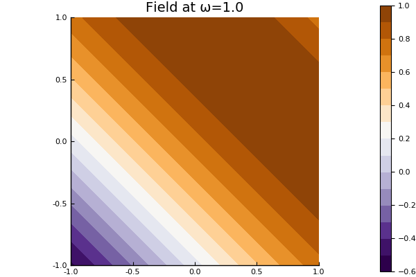

Source wave
Source is a struct a For acoustics, any wave field $u(x,y)$ that satisfies $\nabla^2 u(x,y) + k^2 u(x,y) = 0$, with $k = \omega/c$, can be a source wave, also called an incident wave. See Source for a list of types and functions.
2D Acoustics
Two common source waves are shown below.
For a plane-wave of the form $u(x,y) = A \mathrm e^{\mathrm i k \mathbf n \cdot (\mathbf x - \mathbf x_0)}$, where $A$ is the amplitude, $\mathbf n = (n_1,n_2)$ is the direction of propagation, and $\mathbf x_0 = (x_0,y_0)$ is the initially position of the source, we can use
julia> medium = Acoustic(1.0, 1.0, 2);
julia> A = 1.0;
julia> n = [1.0,1.0];
julia> x0 = [1.0,0.0];
julia> plane_wave = plane_source(medium; amplitude = A, direction = n, position = x0);We can plot this source wave one frequency ω by using
julia> ω = 1.0;
julia> domain = Rectangle([-1.0,-1.0],[1.0,1.0]);
julia> plot(plane_wave, ω; bounds = domain)
Another useful source is the point source $u(x,y) = A \mathrm e^{\mathrm i k \mathbf n \cdot (\mathbf x - \mathbf x_0)}$
plot(sim::FrequencySimulation{T}, ω::T;
source_field(x,ω) = amp(ω)exp(imω/medium.c*dot(x-position, direction))
sourceposition = SVector(0.0,1.0) amplitude = 1.0 s1 = pointsource(a2, sourceposition, amplitude) s2 = pointsource(a2, 2.0*source_position, amplitude)
source = planesource(hostmedium; direction = [1.0,0.0])